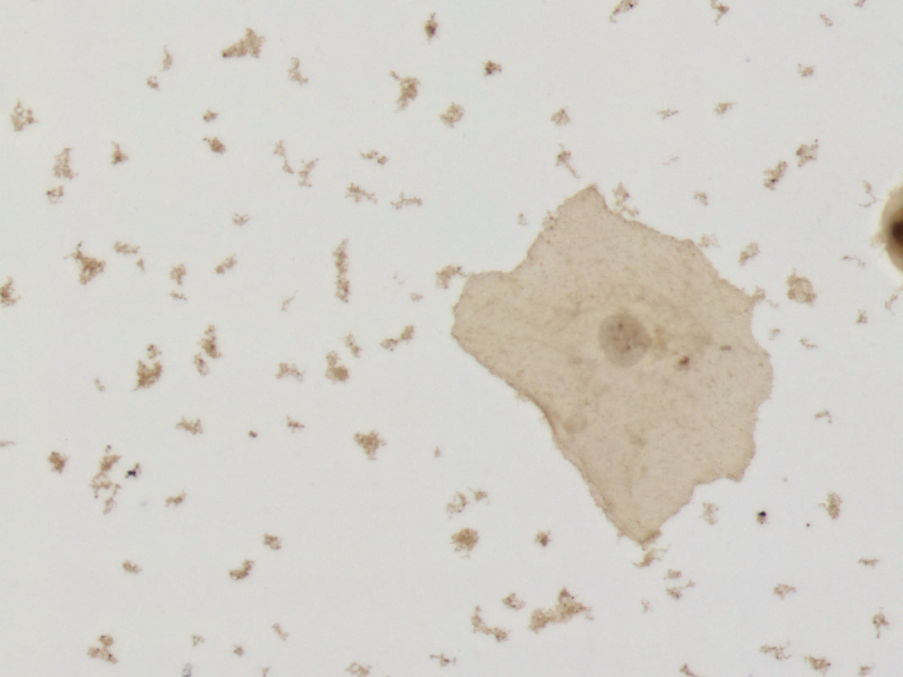
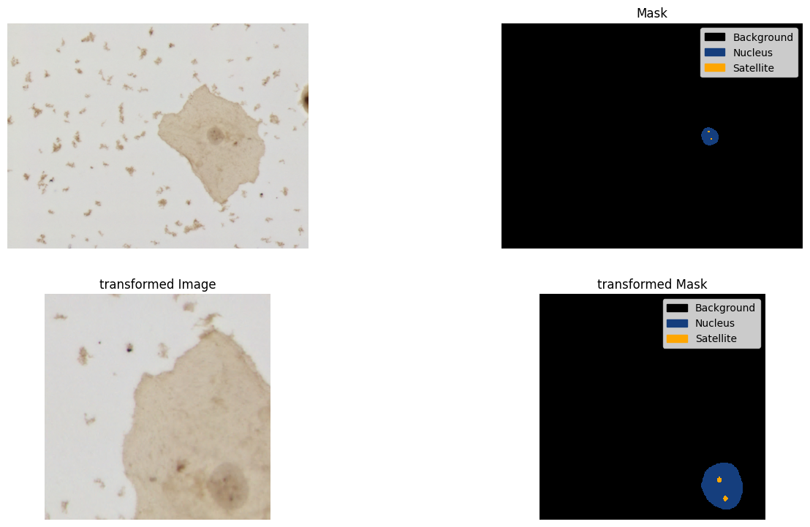

# Values of each category at the segmentation mask
categories_to_train = {
0,
1,
2,
3,
4,
5,
6,
7,
}
# The main categories of the dataset, just to compute the metrics for specific categories
selected_categories = {
1,
2,
3,
}SegFormer

This tutorial is about SegFormer model using HuggingFaces.
- Original implementation: NVlabs/SegFormer
- HF implementation: docs
Libraries
- albumentations - For augmentation pipeline.
- transformers - For model structure.
- Pytorch - As model backend, and for the training loop, using: optimizer, learning rate scheduler, loss functions and other things.
- datasets - To load the dataset.
- matplotlib - for visualization.
- torchmetrics - to evaluate the model when training the model
- lapixdl - tool for model evaluation
Summary
Run setup - General settings of this tutorials: Here you will define the categories, dataset (from HF datasets), the pretrained model desired (from HF models), and the path for the output files.
- Attention: The dataset need to be a dataset for Semantic Segmentation, read the CCAgT dataset card to understand the format. Also, the pretrained weights for the model for this tutorial should be from a SegFormer model.
Setup requirements - Install and import the nescessary modules
- Attention: If using google colab, you will probably need to restart the kernel because of the reinstallation of PIL.
Load dataset - Load the dataset from the HF hub.
Augmentations - Define the augmentation pipeline process.
Rewrite the model - Just to only to assign weights to each class in the loss function
HF definitions - A dataset class for the model, load the model and feature extractor, define the train metrics, and training functions.
Train - The blocks to execute the train, splited into 2 steps
Lapixdl evaluation - Load the best model and evaluate.
Train “strategy” for the CCAgT dataset
- At this tutorial we apply
RandomCropfrom Albumentation to ensure images with size of 512x512 to train SegFormer. - Use weights for each category for the loss function (CrossEntropyLoss).
- Use IoU metric to evaluate the model at pixel level when training the model.
- AdamW as optimizer.
- OneCycleLR as scheduler for the learning rate.
- Train into two steps:
- Train the model for
xepochs with the encoder freezed. - Load the model from the first step, and train for
xepochs with the encoder unfreezed.
- Train the model for
Run setup
loss_function_weights = [...] # (need to edit) Weights for each categoryThe pretrained model can be:
| hub name | variant | Depths | Hidden sizes | Decoder hidden size | Params (M) | ImageNet-1k Top 1 |
|---|---|---|---|---|---|---|
| nvidia/mit-b0 | MiT-b0 | [2, 2, 2, 2] | [32, 64, 160, 256] | 256 | 3.7 | 70.5 |
| nvidia/mit-b1 | MiT-b1 | [2, 2, 2, 2] | [64, 128, 320, 512] | 256 | 14.0 | 78.7 |
| nvidia/mit-b2 | MiT-b2 | [3, 4, 6, 3] | [64, 128, 320, 512] | 768 | 25.4 | 81.6 |
| nvidia/mit-b3 | MiT-b3 | [3, 4, 18, 3] | [64, 128, 320, 512] | 768 | 45.2 | 83.1 |
| nvidia/mit-b4 | MiT-b4 | [3, 8, 27, 3] | [64, 128, 320, 512] | 768 | 62.6 | 83.6 |
| nvidia/mit-b5 | MiT-b5 | [3, 6, 40, 3] | [64, 128, 320, 512] | 768 | 82.0 | 83.8 |
# (need to edit) To load the model weights and feature extractor
pretrained_model_name = "nvidia/mit-b3"# (need to edit) To load the dataset from HF hub
dataset_hub_name = "lapix/CCAgT"# (need to edit) Base path where to save the models output - We recommend use google drive when running on google colab
drive_output_base_path = "./"id2label = {
0: "Background",
1: "Nucleus",
2: "Cluster",
3: "Satellite",
4: "Nucleus_out-of-focus",
5: "Overlapped_nuclei",
6: "Non-viable_nucleus",
7: "Leukocyte_nucleus",
} # (need to edit) Dict with category value to name of category
label2id = {
"Background": 0,
"Nucleus": 1,
"Cluster": 2,
"Satellite": 3,
"Nucleus_out-of-focus": 4,
"Overlapped_nuclei": 5,
"Non-viable_nucleus": 6,
"Leukocyte_nucleus": 7,
} # (need to edit) Dict with name of the category to category value
id2color = {
0: (0, 0, 0),
1: (21, 62, 125),
2: (114, 67, 144),
3: (254, 166, 0),
4: (26, 167, 238),
5: (39, 91, 82),
6: (5, 207, 192),
7: (255, 0, 0),
} # (need to edit) Dict withcategory value to category color (R, G, B)# check the GPU and VRAM
%reload_ext autoreload
%autoreload 2
%matplotlib inline
!/opt/bin/nvidia-smi
!nvcc --versionMon Sep 12 14:43:42 2022
+-----------------------------------------------------------------------------+
| NVIDIA-SMI 460.32.03 Driver Version: 460.32.03 CUDA Version: 11.2 |
|-------------------------------+----------------------+----------------------+
| GPU Name Persistence-M| Bus-Id Disp.A | Volatile Uncorr. ECC |
| Fan Temp Perf Pwr:Usage/Cap| Memory-Usage | GPU-Util Compute M. |
| | | MIG M. |
|===============================+======================+======================|
| 0 Tesla T4 Off | 00000000:00:04.0 Off | 0 |
| N/A 36C P8 9W / 70W | 0MiB / 15109MiB | 0% Default |
| | | N/A |
+-------------------------------+----------------------+----------------------+
+-----------------------------------------------------------------------------+
| Processes: |
| GPU GI CI PID Type Process name GPU Memory |
| ID ID Usage |
|=============================================================================|
| No running processes found |
+-----------------------------------------------------------------------------+
nvcc: NVIDIA (R) Cuda compiler driver
Copyright (c) 2005-2020 NVIDIA Corporation
Built on Mon_Oct_12_20:09:46_PDT_2020
Cuda compilation tools, release 11.1, V11.1.105
Build cuda_11.1.TC455_06.29190527_0Setup requirements
install
%nbdev_collapse_output
!pip install transformers==4.18.0
!pip install timm==0.5.4
!pip install lapixdl==0.8.12
!pip install torchmetrics==0.8.0
!pip install git+https://github.com/albumentations-team/albumentations
!pip install Pillow==9.0.0 # Because inside of HF image_utils needs PIL.Image.Resampling
!pip install datasets%nbdev_collapse_output
# https://github.com/albumentations-team/albumentations/issues/1100#issuecomment-1003467333
!pip uninstall opencv-python-headless -y
!pip install opencv-python-headless==4.1.2.30imports
import multiprocessing
import os
from datetime import datetime
import albumentations as A
import matplotlib.colors as mlp_colors
import matplotlib.pyplot as plt
import numpy as np
import torch
from datasets import load_dataset # HF datasets
from lapixdl.evaluation.evaluate import evaluate_segmentation
from matplotlib import patches
from PIL import Image
from torch import nn
from torch.optim import AdamW
from torch.optim.lr_scheduler import OneCycleLR
from torch.utils.data import DataLoader, Dataset
from torchmetrics import Metric
from tqdm.notebook import tqdm
from transformers import SegformerFeatureExtractorLoad dataset
In this tutorial we will load a dataset from the Hugging Face Hub. The dataset utilized is the CCAgT
dataset = load_dataset(dataset_hub_name)WARNING:datasets.builder:No config specified, defaulting to: cc_ag_t/semantic_segmentationDownloading and preparing dataset cc_ag_t/semantic_segmentation (download: 3.31 GiB, generated: 2.85 MiB, post-processed: Unknown size, total: 3.31 GiB) to /root/.cache/huggingface/datasets/lapix___cc_ag_t/semantic_segmentation/2.0.0/b217fbe80bc3e3bd4767d20634c00a8ce07a817f863ecd14c762718168f151e0...Dataset cc_ag_t downloaded and prepared to /root/.cache/huggingface/datasets/lapix___cc_ag_t/semantic_segmentation/2.0.0/b217fbe80bc3e3bd4767d20634c00a8ce07a817f863ecd14c762718168f151e0. Subsequent calls will reuse this data.After download all dataset, the dataset will be a “DatasetDict”, where we can acces each fold of the dataset.
datasetDatasetDict({
train: Dataset({
features: ['image', 'annotation'],
num_rows: 6533
})
test: Dataset({
features: ['image', 'annotation'],
num_rows: 1403
})
validation: Dataset({
features: ['image', 'annotation'],
num_rows: 1403
})
})We can easily access any image of any fold. As follow:
dataset["train"][0]["image"]
Augmentations
For this work we use albumentations:
https://albumentations.ai/
@Article{info11020125,
AUTHOR = {Buslaev, Alexander and Iglovikov, Vladimir I. and Khvedchenya, Eugene and Parinov, Alex and Druzhinin, Mikhail and Kalinin, Alexandr A.},
TITLE = {Albumentations: Fast and Flexible Image Augmentations},
JOURNAL = {Information},
VOLUME = {11},
YEAR = {2020},
NUMBER = {2},
ARTICLE-NUMBER = {125},
URL = {https://www.mdpi.com/2078-2489/11/2/125},
ISSN = {2078-2489},
DOI = {10.3390/info11020125}
}The augmentation functions are applied every time an image is passed from the dataloader to the model during training. So in a single epoch the model trains on one augmented version of each image in the data set.
Appling a pipeline of augmentations
First, we fix the seeds, and then create a pipeline of transforms from albumentations.
# Fix seeds for albumentations
import random
import imgaug
random.seed(1609)
imgaug.seed(1609)
albumentations_transforms = [
A.ColorJitter(
brightness=0.2, contrast=0.2, saturation=0.2, hue=0.2, p=0.5, always_apply=False
),
A.GridDistortion(
num_steps=5,
distort_limit=(-0.3, 0.3),
interpolation=2,
border_mode=4,
value=(0, 0, 0),
mask_value=0,
p=0.5,
always_apply=False,
), # testar
A.ShiftScaleRotate(
shift_limit=(-0.25, 0.25),
scale_limit=(-0.5, 0.5),
rotate_limit=(-90, 90),
interpolation=2,
border_mode=3,
value=(0, 0, 0),
mask_value=0,
p=0.5,
always_apply=False,
),
A.VerticalFlip(p=0.5, always_apply=False),
A.HorizontalFlip(p=0.5, always_apply=False),
A.RandomCrop(height=512, width=512, always_apply=True),
# A.Normalize(
# mean=(0.67167, 0.7197, 0.77049), std=(0.1557, 0.12242, 0.08686), max_pixel_value=255.0, always_apply=True, p=1.0
# )
]
alb_transform = A.Compose(albumentations_transforms)Run the transforms pipeline and plot the image and mask as visualization example
image = np.array(dataset["train"][0]["image"])
mask = np.array(dataset["train"][0]["annotation"])
transformed = alb_transform(image=image, mask=mask)
transformed_image = transformed["image"]
transformed_mask = transformed["mask"]
fig = plt.figure(figsize=(16, 9), dpi=100)
ax1 = fig.add_subplot(2, 2, 1)
ax1.imshow(image)
ax1.set_axis_off()
ax2 = fig.add_subplot(2, 2, 2, sharex=ax1, sharey=ax1)
mask_categories = np.unique(mask)
colors_rgba = {k: tuple([c / 255 for c in v] + [1.0]) for k, v in id2color.items()}
cmap = mlp_colors.ListedColormap([colors_rgba[cat_id] for cat_id in mask_categories])
handles = [
patches.Patch(color=colors_rgba[cat_id], label=id2label[cat_id])
for cat_id in mask_categories
]
ax2.imshow(
mask,
cmap=cmap,
vmax=max(mask_categories),
vmin=min(mask_categories),
interpolation="nearest",
)
ax2.set_axis_off()
ax2.legend(handles=handles)
ax2.set_title("Mask")
ax3 = fig.add_subplot(2, 2, 3)
ax3.imshow(transformed_image)
ax3.set_axis_off()
ax3.set_title("transformed Image")
ax4 = fig.add_subplot(2, 2, 4, sharex=ax3, sharey=ax3)
ax4.imshow(
transformed_mask,
cmap=cmap,
vmax=max(mask_categories),
vmin=min(mask_categories),
interpolation="nearest",
)
ax4.set_axis_off()
ax4.legend(handles=handles)
ax4.set_title("transformed Mask")Text(0.5, 1.0, 'transformed Mask')
Rewrite the model
To use weights at the function loss, we need to rewrite the SegFormer class and foward the weights of the loss function
Copied from https://github.com/huggingface/transformers/blob/6568752039dfba86ba6eb994fd7e29888d5ed4a8/src/transformers/models/segformer/modeling_segformer.py#L741
from torch.nn import CrossEntropyLoss
from transformers import SegformerDecodeHead, SegformerModel, SegformerPreTrainedModel
from transformers.modeling_outputs import SemanticSegmenterOutput
class SegformerForSemanticSegmentation(SegformerPreTrainedModel):
def __init__(self, config):
super().__init__(config)
self.segformer = SegformerModel(config)
self.decode_head = SegformerDecodeHead(config)
# Initialize weights and apply final processing
self.post_init()
def forward(
self,
pixel_values,
labels=None,
output_attentions=None,
output_hidden_states=None,
return_dict=None,
):
return_dict = (
return_dict if return_dict is not None else self.config.use_return_dict
)
output_hidden_states = (
output_hidden_states
if output_hidden_states is not None
else self.config.output_hidden_states
)
outputs = self.segformer(
pixel_values,
output_attentions=output_attentions,
output_hidden_states=True, # we need the intermediate hidden states
return_dict=return_dict,
)
encoder_hidden_states = outputs.hidden_states if return_dict else outputs[1]
logits = self.decode_head(encoder_hidden_states)
loss = None
if labels is not None:
if self.config.num_labels == 1:
raise ValueError("The number of labels should be greater than one")
else:
# upsample logits to the images' original size
upsampled_logits = nn.functional.interpolate(
logits, size=labels.shape[-2:], mode="bilinear", align_corners=False
)
loss_fct = CrossEntropyLoss(
ignore_index=self.config.semantic_loss_ignore_index,
weight=torch.Tensor(self.config.loss_function_weights).to(
self.device
),
)
loss = loss_fct(upsampled_logits, labels)
if not return_dict:
if output_hidden_states:
output = (logits,) + outputs[1:]
else:
output = (logits,) + outputs[2:]
return ((loss,) + output) if loss is not None else output
return SemanticSegmenterOutput(
loss=loss,
logits=logits,
hidden_states=outputs.hidden_states if output_hidden_states else None,
attentions=outputs.attentions,
)HF definitions
device = torch.device("cuda" if torch.cuda.is_available() else "cpu")CCAgT dataset for Segmentation class
class CCAgTSeg(Dataset):
def __init__(self, ccagt_dataset, feature_extractor, transform=None):
self.ccagt_dataset = ccagt_dataset
self.transform = transform
self.feature_extractor = feature_extractor
def __getitem__(self, idx):
img = self.ccagt_dataset[idx]["image"].convert("RGB")
msk = self.ccagt_dataset[idx]["annotation"].convert("L")
if self.transform is not None:
transformed = self.transform(image=np.array(img), mask=np.array(msk))
img = Image.fromarray(transformed["image"])
msk = Image.fromarray(transformed["mask"])
encoded_inputs = self.feature_extractor(
images=img, segmentation_maps=msk, return_tensors="pt"
)
for k, v in encoded_inputs.items():
encoded_inputs[k].squeeze_() # remove batch dimension
return encoded_inputs
def __len__(self):
return self.ccagt_dataset.num_rowsLoad pretrained SegFormer model
model = SegformerForSemanticSegmentation.from_pretrained(
pretrained_model_name,
num_labels=len(categories_to_train),
id2label=id2label,
label2id=label2id,
)model.config.loss_function_weights = loss_function_weights
model.config.loss_function_weightsmodel.config.semantic_loss_ignore_indexMetrics code (IoU)
class IoU(Metric):
name = "iou_by_cat"
short_name = "iou"
def __init__(self, ignore={0}, categories=id2label): # Ignore background pixels
self.ignore = ignore
self.categories = categories
self._categories_to_compute = {
k: v for k, v in categories.items() if k not in ignore
}
self.reset()
def reset(self):
self.intersection = {k: 0.0 for k in self._categories_to_compute}
self.union = {k: 0.0 for k in self._categories_to_compute}
def update(self, preds: torch.Tensor, target: torch.Tensor):
for cat_id in self._categories_to_compute:
# Get the prediction and target binary mask for `c` category
p = torch.where(preds == cat_id, 1, 0)
t = torch.where(target == cat_id, 1, 0)
intersection_ = (p * t).float().sum().item()
total_area_ = (p + t).float().sum().item()
union_ = total_area_ - intersection_
self.intersection[cat_id] += intersection_
self.union[cat_id] += union_
def compute(self):
def iou(intersection, union):
return intersection / union if union > 0 else np.nan
return {
cat_name: iou(self.intersection[cat_id], self.union[cat_id])
for cat_id, cat_name in self._categories_to_compute.items()
}
@staticmethod
def to_str(iou_by_cat):
def fs(word, value):
size = int((len(word) - 7) / 2)
ws = " " * size
txt = f"{ws}{value:.5f}{ws}"
return txt
iou_by_cat = dict(iou_by_cat)
txt_names = "| ".join([k for k in iou_by_cat])
txt_values = "| ".join([fs(k, v) for k, v in iou_by_cat.items()])
txt = f"\n\t\t| {txt_names} |"
txt += f"\n\t\t| {txt_values} |"
return txt
def compute_mean(
values,
):
return np.nanmean(values)
def compute_selected_mean(
values_by_cat,
selected_categories=selected_categories, # Selected categories will be the main categories of CCAgT dataset
label2id=label2id,
):
return compute_mean(
[
value
for cat_name, value in values_by_cat.items()
if label2id[cat_name] in selected_categories
]
)Define metrics and monitor best model
metrics = [IoU]
monitor = "miou_selected_categories"Load pretrained SegFormer feature extractor
feature_extractor = SegformerFeatureExtractor.from_pretrained(
pretrained_model_name,
do_resize=False,
do_normalize=True, # true needs image_mean and image_std # Issue https://github.com/huggingface/transformers/issues/17714
image_mean=[0.0, 0.0, 0.0],
image_std=[1.0, 1.0, 1.0],
)Init CCAgT dataset for Segmentation
dataset_train = CCAgTSeg(
ccagt_dataset=dataset["train"], feature_extractor=feature_extractor
)
dataset_valid = CCAgTSeg(
ccagt_dataset=dataset["validation"], feature_extractor=feature_extractor
)Move model to GPU
model.to(device)
model.devicedevice(type='cuda', index=0)Training code
def evaluate_step(logits, labels, metrics):
# evaluate
with torch.no_grad():
upsampled_logits = nn.functional.interpolate(
logits, size=labels.shape[-2:], mode="bilinear", align_corners=False
)
predicted = upsampled_logits.argmax(dim=1)
for m in metrics:
m.update(predicted, labels)
return metrics
def training_loop(train_dataloader, metrics, optimizer, device, epoch, scheduler=None):
train_loss = []
for idx, batch in enumerate(
tqdm(train_dataloader, desc="training", unit="steps", leave=False)
):
# get the inputs;
pixel_values = batch["pixel_values"].to(device)
labels = batch["labels"].to(device)
# zero the parameter gradients
optimizer.zero_grad()
# forward + backward + optimize
outputs = model(pixel_values=pixel_values, labels=labels)
loss, logits = outputs.loss, outputs.logits
train_loss.append(loss.item())
loss.backward()
optimizer.step()
metrics = evaluate_step(logits, labels, metrics)
if scheduler is not None:
scheduler.step()
return metrics, np.nanmean(train_loss)
def validation_loop(valid_dataloader, metrics, device):
valid_loss = []
for idx, batch in enumerate(
tqdm(valid_dataloader, desc="validation", unit="steps", leave=False)
):
pixel_values = batch["pixel_values"].to(device)
labels = batch["labels"].to(device)
outputs = model(pixel_values=pixel_values, labels=labels)
loss, logits = outputs.loss, outputs.logits
valid_loss.append(loss.item())
metrics = evaluate_step(logits, labels, metrics)
return metrics, np.nanmean(valid_loss)
def compute_and_log(metrics, step, loss, epoch, dt_start, fold):
extra = {}
for m in metrics:
m_output = m.compute()
m.reset()
extra[m.name] = m_output
dt_end = datetime.now()
done_into = str(dt_end - dt_start)
tn = dt_end.strftime("%H:%M:%S")
print("-" * 50)
print("-" * 22, fold, "-" * 21)
print("-" * 50)
print(f"\t{epoch} | {tn} | {fold} | done into: {done_into}")
print(f"\t{epoch} | {tn} | {fold} | Loss: {loss:.8f}")
print(f"\t{epoch} | {tn} | {fold} | {m.name}: {m.to_str(m_output)}")
if m.name.endswith("_by_cat"):
mean_m = compute_mean(list(m_output.values()))
mean_selected_m = compute_selected_mean(dict(m_output))
print(f"\t{epoch} | {tn} | {fold} | m{m.short_name}: {mean_m:.5f}")
print(
f"\t{epoch} | {tn} | {fold} | m{m.short_name} selected categories: {mean_selected_m:.5f}"
)
extra[f"m{m.short_name}"] = mean_m
extra[f"m{m.short_name}_selected_categories"] = mean_selected_m
return metrics, extra
def save_best_model(results, current_best_value, monitor, epoch, dir_path):
if isinstance(monitor, str):
if monitor in results:
v = results[monitor]
else:
raise KeyError(
f"Unexpected value for monitor. Have available: {results.keys()}"
)
else:
v = monitor(results)
if v >= current_best_value:
print(
f"\t{epoch} | Saving best model (last={current_best_value:.5f} | now={v:.5f})..."
)
current_best_value = v
model.save_pretrained(dir_path)
return current_best_value
def fit(
*,
model,
train_dataloader,
valid_dataloader,
epochs,
optimizer,
scheduler,
device,
metrics,
monitor,
path_checkpoints,
path_best_model,
epoch_start=0,
):
_metrics = {"train": [i() for i in metrics], "valid": [i() for i in metrics]}
metric_bm = 0.0
model.to(device)
model.train()
for epoch in tqdm(
range(epoch_start, epoch_start + epochs), position=0, unit="epochs"
):
dt_epoch_start = datetime.now()
step_end = epoch * len(train_dataloader)
print(f"Epoch: {epoch} -> start at {dt_epoch_start}")
# Normally the scheduler step is one by epoch, but for Onecycle is for each step
_metrics["train"], train_loss = training_loop(
train_dataloader, _metrics["train"], optimizer, device, epoch, scheduler
)
_metrics["train"], _ = compute_and_log(
_metrics["train"], step_end, train_loss, epoch, dt_epoch_start, "train"
)
dt_validation_start = datetime.now()
_metrics["valid"], valid_loss = validation_loop(
valid_dataloader, _metrics["valid"], device
)
_metrics["valid"], results = compute_and_log(
_metrics["valid"], step_end, valid_loss, epoch, dt_validation_start, "valid"
)
# Save checkpoint
print(f"\t{epoch} | Saving checkpoint...")
model.save_pretrained(path_checkpoints)
metric_bm = save_best_model(results, metric_bm, monitor, epoch, path_best_model)
return modelTrain
Step1
Define parameters and load model
step_name = "step_1"
epochs = 150
batch_size = 8
lr = 1e-4
lr_min = 1e-6
max_lr = 1e-3
weight_decay = 1e-3
num_workers = multiprocessing.cpu_count()
path_checkpoints = os.path.join(drive_output_base_path, step_name)
path_best_model = os.path.join(path_checkpoints, "best_model")tfs = A.Compose(albumentations_transforms)
tfs# @title Freeze encoder {form-width: "15%", display-mode: "form" }
for param in model.base_model.encoder.patch_embeddings.parameters():
param.requires_grad = False# Set the transforms pipeline
dataset_train.transform = tfs
# Define data loaders
train_dataloader = DataLoader(
dataset_train, batch_size=batch_size, shuffle=True, num_workers=num_workers
)
valid_dataloader = DataLoader(
dataset_valid, batch_size=batch_size, num_workers=num_workers
)
# Define optimizer
optimizer = AdamW(model.parameters(), lr=lr, weight_decay=weight_decay)
# Define scheduler
scheduler = OneCycleLR(
optimizer,
max_lr=max_lr,
steps_per_epoch=len(train_dataloader),
epochs=epochs,
div_factor=max_lr / lr,
final_div_factor=lr / lr_min,
verbose=False,
)fit model
!/opt/bin/nvidia-smi
!nvcc --versionmodel = fit(
model=model,
train_dataloader=train_dataloader,
valid_dataloader=valid_dataloader,
epochs=epochs,
optimizer=optimizer,
scheduler=scheduler,
device=device,
metrics=metrics,
monitor=monitor,
path_checkpoints=path_checkpoints,
path_best_model=path_best_model,
epoch_start=0,
)Step2
Define parameters and load model
step_name = "step_2"
last_step_name = "step_1"
subdir = "best_model"
epochs = 150
last_epoch_step1 = 150
batch_size = 8
lr = 1e-4
lr_min = 1e-6
max_lr = 1e-3
weight_decay = 1e-3
num_workers = multiprocessing.cpu_count()
path_checkpoints = os.path.join(drive_output_base_path, step_name)
path_best_model = os.path.join(path_checkpoints, "best_model")tfs = A.Compose(albumentations_transforms)
tfs# @title load best model from last step {form-width: "15%", display-mode: "form" }
model = model.from_pretrained(
os.path.join(drive_output_base_path, last_step_name, subdir)
).to(device)# @title Unfreeze encoder {form-width: "15%", display-mode: "form" }
for param in model.base_model.encoder.patch_embeddings.parameters():
param.requires_grad = True# Set the transforms pipeline
dataset_train.transform = tfs
# Define data loaders
train_dataloader = DataLoader(
dataset_train, batch_size=batch_size, shuffle=True, num_workers=num_workers
)
valid_dataloader = DataLoader(
dataset_valid, batch_size=batch_size, num_workers=num_workers
)
# Define optimizer
optimizer = AdamW(model.parameters(), lr=lr, weight_decay=weight_decay)
# Define scheduler
scheduler = OneCycleLR(
optimizer,
max_lr=max_lr,
steps_per_epoch=len(train_dataloader),
epochs=epochs,
div_factor=max_lr / lr,
final_div_factor=lr / lr_min,
verbose=False,
)fit model
!/opt/bin/nvidia-smi
!nvcc --versionmodel = fit(
model=model,
train_dataloader=train_dataloader,
valid_dataloader=valid_dataloader,
epochs=epochs,
optimizer=optimizer,
scheduler=scheduler,
device=device,
metrics=metrics,
monitor=monitor,
path_checkpoints=path_checkpoints,
path_best_model=path_best_model,
epoch_start=last_epoch_step1 + 1,
)Lapixdl evaluation
cats_names = [n for n, v in sorted(label2id.items(), key=lambda x: x[1])]
cats_names['Background',
'Nucleus',
'Cluster',
'Satellite',
'Nucleus_out-of-focus',
'Overlapped_nuclei',
'Non-viable_nucleus',
'Leukocyte_nucleus']load model
step_name = "step_2"
path_checkpoints = os.path.join(drive_output_base_path, step_name)
path_best_model = os.path.join(path_checkpoints, "best_model")
!ls $path_best_modelconfig.json pytorch_model.binbest_model = model.from_pretrained(path_best_model)
best_model.to(device)
best_model.devicedevice(type='cuda', index=0)Function to evaluate
def pred_mask_iterator(dataset, model):
for item in dataset:
img = item["image"].convert("RGB")
encoding = feature_extractor(img, return_tensors="pt")
pixel_values = encoding.pixel_values.to(device)
outputs = model(pixel_values=pixel_values)
logits = outputs.logits.cpu()
# First, rescale logits to original image size
upsampled_logits = nn.functional.interpolate(
logits,
size=img.size[::-1], # (height, width)
mode="bilinear",
align_corners=False,
)
# Second, apply argmax on the class dimension
seg = upsampled_logits.argmax(dim=1)[0]
yield np.array(item["annotation"].convert("L")), segdef evaluate(
dataset,
fold_name,
model=model,
categories=cats_names,
metrics_choice=["IoU", "F-Score"],
):
choices_folds = {"valid", "test", "test_slide"}
if fold_name not in choices_folds:
raise KeyError("this fold name is not valid")
print(f"Working into {fold_name} with a total of {dataset.num_rows} items!")
print(">Get the iterators for GT masks and predicted masks...")
gt_masks, pred_masks = pred_mask_iterator(dataset, model)
print(">Evaluating...")
eval_results = evaluate_segmentation(gt_masks, pred_masks, categories)
print(">Confusion matrix...")
fig, ax = eval_results.show_confusion_matrix()
fig.set_size_inches(16, 9)
plt.show()
print(f">Computing metrics ({metrics_choice})...")
selected_cats = {id2label[c] for c in categories_to_train}
print(
f" >The categories that the model use to train is the same used -> {selected_cats}"
)
print(" >Getting the metrics for each category...")
metrics_by_category = {
k: v
for k, v in eval_results.to_dict()["By Class"].items()
if k in selected_cats
}
print(" >Computing the mean of each metric with, and without background...")
metrics_average = {
m: np.nanmean([v[m] for v in metrics_by_category.values()])
for m in metrics_choice
}
metrics_average_without_bg = {
m: np.nanmean(
[v[m] for k, v in metrics_by_category.items() if k != "Background"]
)
for m in metrics_choice
}
print(f">Metrics average: {metrics_average_without_bg}")
print(f">Metrics average with background: {metrics_average}")
print(">Metrics by category: \n")
def fmt_metric_value_msg(metrics):
return "\n\t\t".join(
[
(
f"{metric_name: <15} = {float(metric_value):.4f}"
if str(metric_value).isdigit()
else f"{metric_name: <15} = {metric_value}"
)
for metric_name, metric_value in metrics.items()
]
)
msg = "\t" + "\n\t".join(
[
f"{cat_name}\n\t\t{fmt_metric_value_msg(v)}"
for cat_name, v in metrics_by_category.items()
]
)
print(msg)
print(">Returning metrics from lapixdl...")
return eval_resultsRun evaluate
evaluate(
dataset["validation"], "valid", best_model, cats_names, ["IoU", "F-Score"]
).to_dataframe()evaluate(
dataset["test"], "test", best_model, cats_names, ["IoU", "F-Score"]
).to_dataframe()